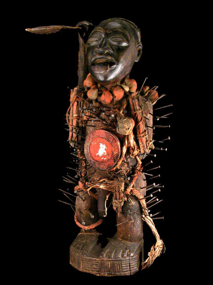

Thursday, September the 16th, 2004
back to: title, date or indexes
Following the huge success of TV talent shows like Pop Idol, American Idol and the imminent Lit Idol, here at Hooting Yard we are launching our own contest to find this year's Mud Idol. Entrants should be keen and aspiring primitive fetish objects, perhaps voodoo-related, possibly decorated with feathers, beads, blood, bits of bone or similar. We are particularly looking for an idol that has had a large number of nails driven into it, as in the example below (which is made of wood and is therefore disqualified). If you think you could be Mud Idol 2004, watch out for details of the auditions, to be held in the grounds of an imposing chateau during a terrifying thunderstorm. Please note: nails not supplied.
